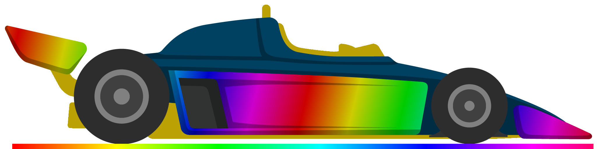
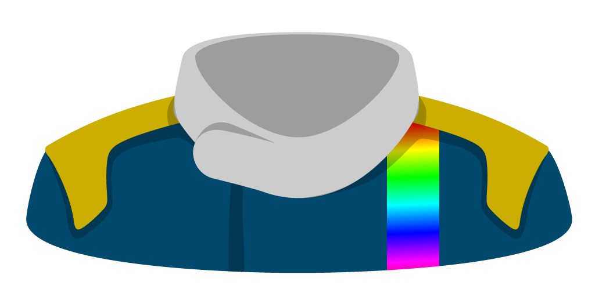

Golden Lap
Funselektor - Strelka Games (2024)
10 stagioni da 10 gare ciascuna.Partenza con la scuderia più scarsa (moddata nel nome e nella grafica).
Forse anche un po' di roleplay, vediamo.
Indice
00 - introduzione
Ho acquistato Golden Lap dopo aver giocato ad Art of Rally, sempre di Funselektor.Mi è piaciuto lo stile minimale e la sensazione arcade ma non troppo di Art of Rally, e volevo riprovare un gestionale a tema F1 dopo che anni fa avevo lasciato perdere Motorsport Manager (2? 3?) per Android.
Golden Lap in due parole
di seguito userò il plurale sovraesteso, ma nel gioco i piloti, gli ingegneri e i capi meccanici sono anche di genere femminile.
Si sceglie una scuderia, si compone la squadra in base ai soldi a disposizione, si sceglie uno sponsor principale, si inizia la stagione composta da 10 Gran Premi (GP).
Prima di ogni GP si può migliorare la propria auto o spiare le altre squadre.
Prima della gara ci sono le qualifiche in cui si possono regolare ulteriormente le parti del la propria auto.
Durante la gara si devono gestire gli stili di guida dei piloti, i consumi di gomme e di carburante, i pit stop e gli eventuali rallentamenti pet bandiere gialle o rosse.
Alla fine della gara piloti e squadra ricevono punti per la classifica in base al piazzamento e soldi in base ai criteri degli sponsor, e si ricomincia con una nuova gara.
Durante le gare i piloti possono infortunarsi o lasciarci le penne, e la squadra dovrà sostituire il pilota
Alla fine della stagione la squadra riceve soldi in base al piazzamento e ai criteri degli sponsor, e inizia una nuova stagione.
Nella nuova stagione si riparte confermando i o le componenti della squadra a costo 0, oppure ingaggiando nuovo personale.
Questa run
Ho giocato a Golden Lap per circa 25 ore e ora voglio affrontare la run definitiva: partire con la scuderia con meno fondi iniziali (e che dunque sceglierà per ultima i componenti della squadra) e vedere dove arriverò dopo 10 stagioni.
Preparazione
Gli sviluppatori hanno chiaramente reso semplice il modding, creando pure una guida molto dettagliata.
Modificando i file .json si possono cambiare molti attributi delle squadre, dei piloti, degli ingegneri e dei capi meccanici, oltre creare un calendario di gare non random come nel gioco base.
Sono modificabili anche i file .psd che permettono di personalizzare forme e livree delle monoposto, delle divise ma anche dei ritratti di piloti, ingegneri e capi meccanici, che nella versione base sono stilizzati. Anche i loghi delle scuderie sono personalizzabili.
Per capire il livello di personalizzazione fatevi un giro su Steam Workshop e troverete molte mod, alcune delle quali hanno ricreato le decadi "reali" dagli anni 70 ai giorni nostri con un lavoro certosino.
La VB Racing
Con un po' di smanettamento su GIMP ho creato la grafica per la mia squadra: VB Racing.
Ne sono abbastanza soddisfatto, non saprei davvero fare di meglio.



01 - costruiamo la squadra
*in progress*